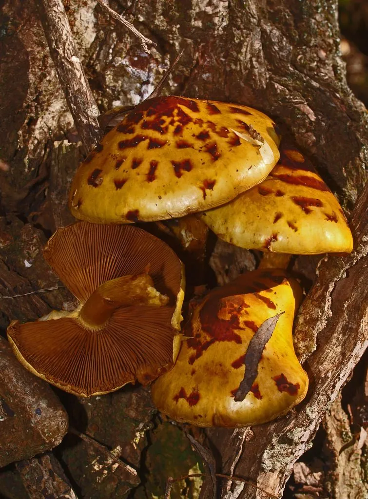

真菌 · 真菌界
黄伞 Pholiota adiposa

黄伞的菌盖金黄至黄褐色、表面黏滑并带鳞片，丛生于阔叶树枯木上，肉质滑嫩、味道鲜美，是北方常见的野生食用菌。
- 分类
- 门担子菌门纲伞菌纲目伞菌目科球盖菇科属鳞伞属
- 栖息环境
- 杨、柳、桦等阔叶树的枯木、倒木与树桩，秋季丛生
- 地理分布
- 温带地区分布，中国北方与东北林区常见
- 保护级别
- 暂无评估（IUCN 未评估，中国未列入重点保护名录）
物种志
黄伞是担子菌门球盖菇科的真菌，子实体丛生。菌盖初期半球形，后平展，直径 3–10 cm，表面金黄色、黄褐色至橙黄色，有一层黏滑的黏液，干燥后发亮，并散布着黄褐色至褐色的鳞片，边缘常残存菌幕；菌肉淡黄色，厚实。菌褶直生，淡黄色，成熟后变为锈褐色。菌柄圆柱形，长 5–12 cm，淡黄色，下部有黄褐色鳞片，有膜质菌环。孢子印锈褐色。
黄伞生于杨、柳、桦等阔叶树的枯木、倒木和树桩上，常成丛生长，在温带地区分布，中国北方和东北林区常见，秋季出菇。它靠分解木材中的纤维素和木质素生活，是木腐真菌。黄伞肉质滑嫩、味道鲜美，可炒食、做汤和干制，是中国北方较受欢迎的野生食用菌，现已实现人工栽培。食用前要清洗掉菌盖表面的黏液，并充分加热；野外采食时要与同属的其他鳞伞区分，避免误食有毒种类。
形态与习性
- 菌盖直径 3–10 cm，金黄至黄褐色
- 表面有黏滑黏液，散布褐色鳞片
- 菌褶淡黄色，成熟后锈褐色
- 菌柄淡黄色，下部有鳞片和菌环
- 孢子印锈褐色
- 食用性可食，肉质滑嫩，须熟食
- 生境阔叶树枯木与树桩
趣味知识
- 黄伞的菌盖表面有一层黏液，摸起来滑溜溜的。
- 它常成丛长在杨树、柳树的枯木上，秋季最多。
- 黄伞肉质滑嫩，是北方较受欢迎的野生食用菌。
- 烹调前要把菌盖上的黏液洗净，并充分加热。